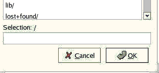
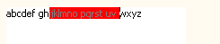

SWT/gtk now uses native Table and Tree widgets.

new API
Display.getDismissalAlignment(): Returns the ordering that should
be used when positioning the default dismissal button for a dialog. This allows dialogs to define
button orderings so as to match platform policy.

Font(Device, FontData[]): Creates a font from an array of
FontData objects. This is important since any application that wishes to run properly
on SWT/motif in DBCS languages should treat a Font’s collection of FontData
objects as inseparable.
StyledText.setSelectionForeground/Background(Color): Sets the editor’s selection
colors. There are also new methods for getting these color values.
